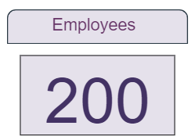
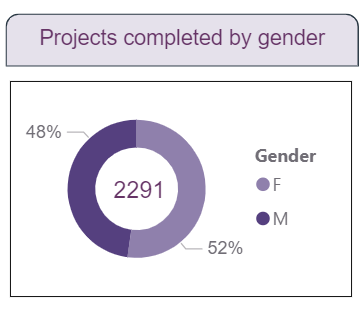

Employee Performance Dashboard
Data Cleaning, Modeling, and Visualization using Power BI.

This project provides an overview of employee performance metrics, including department satisfaction levels, project ratings, and top-performing employees. The workflow involved data cleaning in Excel, data modeling, and visualization in Power BI.
Steps Taken:
Data Cleaning:
- Standardized gender values to "M" and "F".
- Formatted dates into the "DD-MMM-YYYY" format.
- Ensured consistent percentage formats for productivity and satisfaction rates.
Data Modeling:
- Created DAX Measures:
- Average Productivity
- Total Projects Completed
- Added custom columns for:
- Feedback Ratings (Bad, Average, Good, Excellent).
- Satisfaction Level (Low, Medium, High).
- Joining Year from Joining Date.
Dashboard Design:
Total Employees
Displays the total number of employees: 200

Department & Position Slicer
Displays the departments and positions


Gender Distribution for Completed Projects
48% Female, 52% Male, 2291 Total Projects

Department Satisfaction Levels
Highlights variations in satisfaction levels across departments

Projects by Rating
Distribution of projects based on ratings (Good, Average, Excellent, Bad)

Top 5 Employees
Highlights the top-performing employees based on productivity


Key Insights:
- High satisfaction levels in the IT department.
- Employee performance and satisfaction vary significantly across departments.
- Top performers completed up to 19 projects with high satisfaction rates.